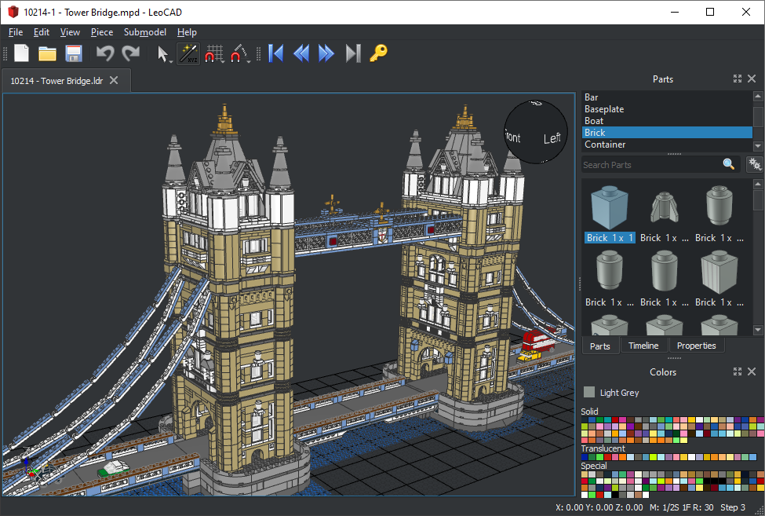
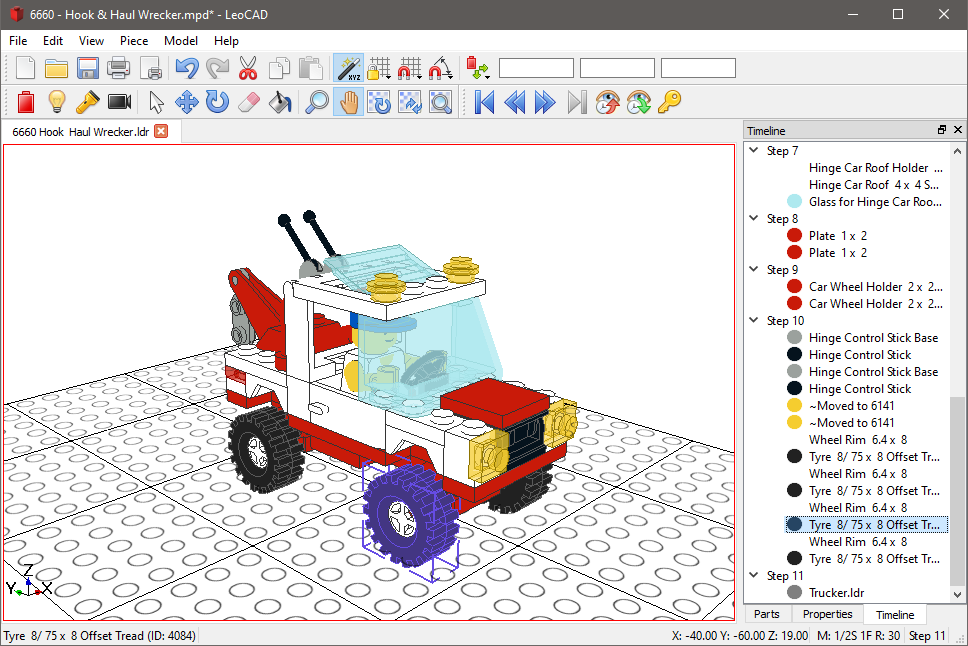
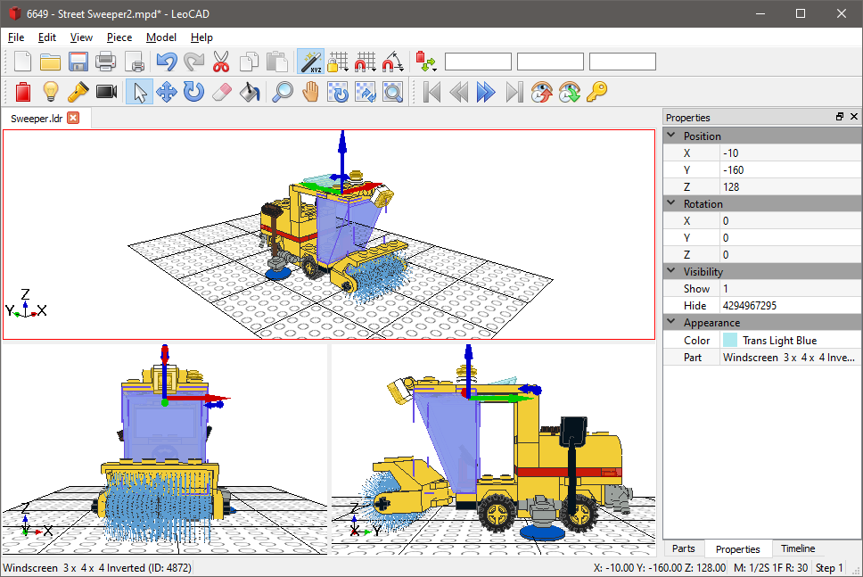

Easy to Use
LeoCAD has an intuitive interface, designed to allow new users to start creating new models without having to spend too much time learning the application.
At the same time it has a rich feature set, enabling experienced users to build models using more advanced techniques.
LDraw Compatible
LeoCAD is fully compatible with the LDraw Standard and related tools. It reads and writes LDR and MPD files so you can share and download models from the internet.
It also uses the LDraw parts library, which has almost 10,000 different parts and keeps receiving updates.
Cross Platform, Open Source
Native versions are available for Windows, Linux and macOS so users are familiar with the program interface.
LeoCAD is Open Source so anyone can contribute with fixes and features, and it's always going to remain free.
Screenshots
LeoCAD is optimized for large models, here's the Tower Bridge official set with over 4,000 pieces:
It can be used to create building instructions with multiple steps:
You can have multiple views at the same time:
